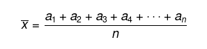
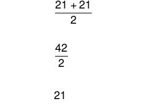
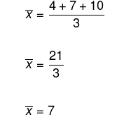
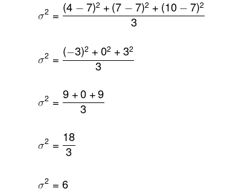

Veremos, a seguir, os principais conceitos e princípios da estatística. Com base neles, será possível definir conceitos mais sofisticados.
A população ou universo estatístico é o conjunto formado por todos elementos que participam de um
determinado tema pesquisado.
O dado estatístico é um elemento que pertence ao conjunto da população, obviamente esse dado deve estar envolvido com o tema da pesquisa.
| População | Dado estatístico |
|---|---|
| Dado de seis faces | 4 |
| Campeões Brasileiros de Mountain Bike | Henrique Avancini |
Chamamos de amostra o subconjunto formado com base no universo estatístico. Uma amostra é utilizada quando a população é muito grande ou infinita. Em casos em que coletar todas as informações do universo estatístico é inviável por motivos financeiros ou logísticos, também se faz necessário a utilização de amostras.
A escolha de uma amostra é de extrema importância para uma pesquisa, e ela deve representar de maneira fidedigna a população. Um exemplo clássico da utilização das amostras em uma pesquisa é na realização do censo demográfico do nosso país.
Em estatística, a variável é o objeto de estudo, isto é, o tema que a pesquisa pretende estudar. Por exemplo, ao estudar-se as características de uma cidade, o número de habitantes pode ser uma variável, assim como o volume de chuva em determinado período ou até mesmo a quantidade de ônibus para o transporte público. Note que o conceito de variável em estatística é dependente do contexto da pesquisa.
A organização dos dados em estatística dá-se em etapas, como em todo processo de organização. Inicialmente é escolhido o tema a ser pesquisado, em seguida, é pensado o método para a coleta dos dados da pesquisa, e o terceiro passo é a execução da coleta. Após o fim dessa última etapa, faz-se a análise do que foi coletado, e assim, com base na interpretação, busca-se resultados. Veremos, agora, alguns conceitos importantes e necessários para a organização dos dados.
Em casos em que os dados podem ser representados por números, ou seja, quando a variável é
quantitativa, utiliza-se o rol para organização desses dados. Um rol pode ser crescente ou decrescente. Caso uma
variável não seja quantitativa, ou seja, caso seja qualitativa, não é possível utilizar-se o rol, por exemplo,
se os dados são sentimentos sobre determinado produto.
Exemplo
Em uma sala de aula, foram coletadas as alturas dos alunos em metros. São elas: 1,70; 1,60; 1,65; 1,78; 1,71;
1,73; 1,72; 1,64.
Como o rol pode ser organizado de maneira crescente ou decrescente, segue que:
rol: {1,60; 1,64; 1,65; 1,70; 1,71; 1,72; 1,73; 1,78}
Observe que, com o rol já montado, é possível encontrar um dado com mais facilidade.
Em casos nos quais há muitos elementos no rol e muitas repetições de dados, o rol torna-se obsoleto, pois a organização desses dados é inviável. Nesses casos, as tabelas e a distribuição de frequências servem como uma excelente ferramenta de organização.
Na tabela de distribuição de frequência absoluta, devemos colocar a frequência em que cada dado aparece, ou seja, a quantidade de vezes que ele aparece.
Vamos construir a tabela de distribuição de frequência absoluta das idades, em anos, dos alunos de uma determinada classe.
| Distribuição de frequências absolutas | |
|---|---|
| Idade | Frequência (F) |
| 8 | 2 |
| 9 | 12 |
| 10 | 12 |
| 11 | 14 |
| 12 | 1 |
| Total (FT) | 41 |
Da tabela podemos obter as seguintes informações: na classe temos 2 alunos com a idade de 8 anos,
12 alunos com 9 anos, e mais 12 alunos com 10 anos, e assim sucessivamente, alcançando o total de 41 alunos. Na
tabela de distribuição de frequências acumuladas, devemos somar a frequência da linha anterior (na tabela de
distribuição de frequência absoluta).
Vamos construir a tabela de distribuição de frequência acumulada das idades da mesma classe do exemplo anterior,
veja:
| Distribuição de frequências acumuladas | |
|---|---|
| Idade | Frequência (F) |
| 8 | 2 |
| 9 | 14 |
| 10 | 26 |
| 11 | 40 |
| 12 | 41 |
| Total (FT) | 41 |
Na tabela de distribuição de frequências relativas, utiliza-se a porcentagem em que cada dado
aparece. Novamente faremos os cálculos baseados na tabela de distribuição de frequência absoluta. Sabemos que 41
corresponde a 100% dos alunos da classe, logo, para determinar a porcentagem de cada idade, basta dividirmos a
frequência da idade por 41 e multiplicarmos o resultado por 100, para, assim, escrevermos na forma de
porcentagem.
| Distribuição de frequências relativas | |
|---|---|
| Idade | Frequência (F) |
| 8 | 4,8% |
| 9 | 29,2% |
| 10 | 29,2% |
| 11 | 34,1% |
| 12 | 2,4% |
| Total (FT) | 100% |
Em casos em que a variável é contínua, isto é, quando ela possui diversos valores, é necessário
agrupá-los em intervalos reais. Na estatística esses intervalos são chamados de classes.
Para construir a tabela de distribuição de frequências em classes, devemos colocar os intervalos na coluna da
esquerda, com seu devido título, e na coluna da direita, devemos colocar a frequência absoluta de cada um dos
intervalos, ou seja, quantos elementos pertencem a cada um deles.
Exemplo
Altura dos alunos da classe do 3º ano do Ensino Médio de uma escola.
| Distribuição de frequência em classes | |
|---|---|
| Altura (metros) | Frequência absoluta (F) |
| [1,40; 1,50[ | 1 |
| [1,50; 1,60[ | 4 |
| [1,60; 1,70[ | 8 |
| [1,70; 1,80[ | 2 |
| [1,80; 1,90[ | 1 |
| Total (FT) | 16 |
Na tabela de distribuição de frequências relativas, utiliza-se a porcentagem em que cada dado aparece. Novamente faremos os cálculos baseados na tabela de distribuição de frequência absoluta. Sabemos que 41 corresponde a 100% dos alunos da classe, logo, para determinar a porcentagem de cada idade, basta dividirmos a frequência da idade por 41 e multiplicarmos o resultado por 100, para, assim, escrevermos na forma de porcentagem.
Analisando a tabela de distribuição de frequência em classes, podemos ver que, na turma do terceiro ano, temos 1
estudante que possui altura entre 1,40 m e 1,50 m, assim como temos 4 estudantes com altura entre 1,50 e 1,60 m,
e assim sucessivamente. Podemos observar também que os estudantes possuem altura entre 1,40 m e 1,90 m, a
diferença entre essas medidas, ou seja, entre a maior altura e a menor altura da amostra, é chamada de
amplitude.
A diferença entre o limite superior e o limite inferior de uma classe é chamada de amplitude da classe, assim, a
segunda, que possui 4 alunos com alturas entre 1,50 metro (inclusos) e 1,60 metro (não inclusos), possui
amplitude de:
As medidas de posição são utilizadas em casos em que é possível construir-se um rol numérico com os dados ou uma tabela de frequência. Essas medidas indicam a posição dos elementos em relação ao rol. As três principais medidas de posição são:

Exemplo
Em um grupo de dança, as idades dos integrantes foram coletadas e representadas no rol a seguir:

Portanto, a idade média dos integrantes é de 22 anos.
A mediana é dada pelo elemento central de um rol que possui uma quantidade ímpar de elementos. Caso o rol possua
uma quantidade par de elementos, devemos considerar os dois elementos centrais e calcular a média aritmética
entre eles.
Exemplo
Considere o rol a seguir.

Chamaremos de moda o elemento do rol que possui maior frequência, ou seja, o elemento que mais aparece nele.
Exemplo
Vamos determinar a moda do rol das idades do grupo de dança.
As medidas de dispersão são utilizadas nos casos em que a média já não é suficiente. Por exemplo, imagine que dois carros tenham percorrido uma média de 40.000 quilômetros. Somente com conhecimento sobre média podemos afirmar que os dois carros andaram determináveis quilômetros cada um, certo?
No entanto, imagine que um dos carros tenha percorrido 79.000 quilômetros, e o outro, 1.000 quilômetros, veja que somente com as informações sobre média não é possível realizar afirmações com precisão.
As medidas de dispersão nos indicarão o quanto os elementos de um rol numérico estão afastados da média aritmética. Temos duas importantes medidas de dispersão:

Substituindo esses dados na fórmula da variância, temos:

Para determinar o desvio-padrão, devemos extrair a raiz da variância.